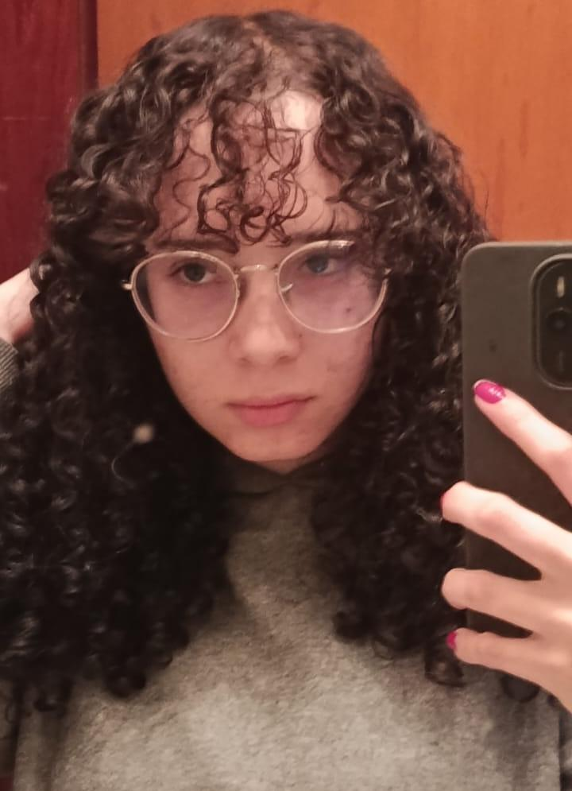

Compartilhar conhecimento por meio da comunicação direta entre usuários, ampliando o saber de todos que buscam envolver-se com a tecnologia.
A ꓥTLꓥS MEMORIꓥE é uma empresa dedicada á criação de sites focados em educação e cultura. Nosso objetivo enquanto empresa é espalhar o conhecimento para nossos usuários por meio de sites modernos e eficientes. Se você também acredita que o conhecimento muda o mundo, venha para Atlas! Nós somos a empresa que decodifica até o céu!

Compartilhar conhecimento por meio da comunicação direta entre usuários, ampliando o saber de todos que buscam envolver-se com a tecnologia.

• Líder de Projetos
Responsável por organizar projetos, definir objetivos, acompanhar o progresso geral, organizar documentos e arquivos, registrar reuniões, manter planejamento atualizado

• Líder de Desenvolvimento
Responsável por orientar programação, ajudar membros com código, revisar projetos técnicos e organizar tarefas de desenvolvimento.

• Líder de Comunicação e Apresentação
Responsável por organizar apresentações, cuidar da comunicação da equipe, preparar relatórios ou explicações, representar o grupo em apresentações.

• Líder de Design / Interface
Responsável por cuidar da aparência dos projetos, orientar design de interfaces, padronizar identidade visual, ajudar na organização visual de apresentações